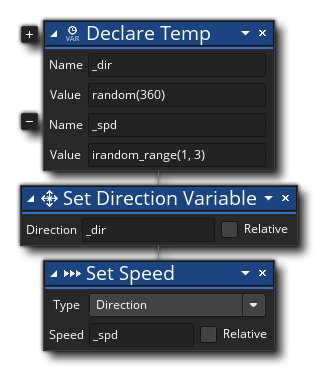

La description
Cette action est utilisée pour déclarer et donner une valeur initiale à une variable temporaire (également appelée variable locale ), qui est une variable qui n'existe que pour la durée de l'événement ou du script dans lequel elle a été déclarée. Les variables temporaires sont très utiles pour stocker des valeurs qui ne sont nécessaires que pour une seule opération et empêcher que vos objets ne soient "encombrés" avec des variables qui ne peuvent être utilisées qu'une seule fois. Ils sont également très utiles pour interrompre vos propres opérations complexes ou pour définir des valeurs dans d'autres instances lorsque vous modifiez la portée de l'action. En effet, les variables déclarées comme temporaires ne sont pas limitées à une instance particulière, mais plutôt à l'événement ou au script lui-même. Si vous créez une variable temporaire puis modifiez la portée de l'action à l'aide de l'action Appliquer à... vérifier la variable temporaire sans problèmes et sans changer sa portée d'action.
Il est à noter que lorsque nous parlons de "valeurs", nous ne voulons pas dire simplement des valeurs numériques, car une variable peut être une chaîne, un pointeur, un ID de ressource ou toute autre chose qu'une fonction peut renvoyer ou utiliser, même une expression. Voir la section sur les types de données pour plus d'informations.
Notez que plusieurs actions ont une case à cocher "Temp" qui vous permet de créer une nouvelle variable locale temporaire pour contenir la valeur de retour de l'action, et cette variable peut être accédée dans le script ou l'événement d'action comme toute autre variable par la suite. Notez également que les variables locales temporaires sont limitées au script ou à l'événement dans lequel elles sont créées et peuvent donc être utilisées par d'autres instances dans le même bloc lors de l'utilisation de Apply To.
Vous pouvez également ajouter des variables supplémentaires dans la même action en cliquant sur l'icône plus
à côté de l'action, et en donnant un autre nom et valeur de variable locale temporaire. Pour plus d'informations sur les variables, consultez la section Variables et étendue des variables.
Syntaxe de l'action:

Arguments:
Argument La description Name Nom de la nouvelle variable à affecter ou nom d'une variable existante à modifier. Value La valeur que la variable devrait contenir.
Exemple:
Le code de bloc d'action ci-dessus crée deux variables temporaires " _dir " et " _spd »et les place à des valeurs aléatoires, puis utilise ces valeurs pour définir l'instance se déplaçant dans une direction aléatoire à une vitesse aléatoire.